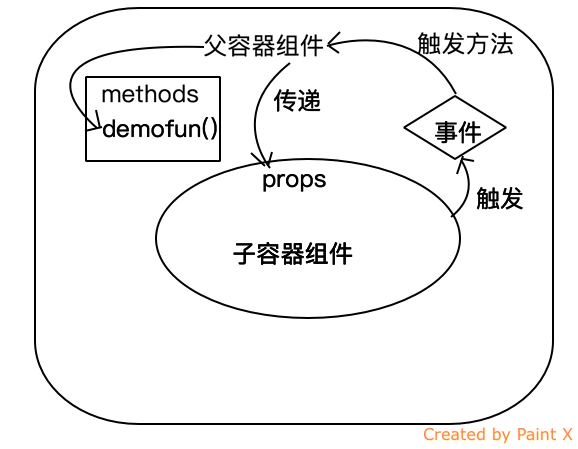

<!DOCTYPE html>
<html lang="en">

<!-- Head tag -->
<head><meta name="generator" content="Hexo 3.8.0">
    <meta charset="utf-8">
    <meta http-equiv="X-UA-Compatible" content="IE=edge">
    <meta name="google-site-verification" content="xBT4GhYoi5qRD5tr338pgPM5OWHHIDR6mNg1a3euekI">
    <meta name="viewport" content="width=device-width, initial-scale=1">
    <meta name="description" content>
    <meta name="keyword" content="lesixiang, 乐思翔, 博客, 前端">
    <link rel="shortcut icon" href="/img/ironman-draw.jpg">
    <!-- Place this tag in your head or just before your close body tag. -->
    <script async defer src="https://buttons.github.io/buttons.js"></script>
    <title>
        
          父组件改变prop的值子组件动态渲染 - 乐思翔的博客
        
    </title>

    <link rel="canonical" href="EchoLsx.github.io/2018/11/01/父组件改变prop的值子组件动态渲染/">

    <!-- Bootstrap Core CSS -->
    <link rel="stylesheet" href="/css/bootstrap.min.css">

    <!-- Custom CSS --> 
    <link rel="stylesheet" href="/css/beantech.min.css">
    
    <!-- Pygments Highlight CSS -->
    <link rel="stylesheet" href="/css/highlight.css">

    <link rel="stylesheet" href="/css/widget.css">

    <link rel="stylesheet" href="/css/rocket.css">

    <link rel="stylesheet" href="/css/signature.css">

    <link rel="stylesheet" href="/css/toc.css">

    <!-- Custom Fonts -->
    <!-- <link href="https://maxcdn.bootstrapcdn.com/font-awesome/4.3.0/css/font-awesome.min.css" rel="stylesheet" type="text/css"> -->
    <!-- Hux change font-awesome CDN to qiniu -->
    <link href="https://cdn.staticfile.org/font-awesome/4.5.0/css/font-awesome.min.css" rel="stylesheet" type="text/css">


    <!-- Hux Delete, sad but pending in China
    <link href='http://fonts.googleapis.com/css?family=Lora:400,700,400italic,700italic' rel='stylesheet' type='text/css'>
    <link href='http://fonts.googleapis.com/css?family=Open+Sans:300italic,400italic,600italic,700italic,800italic,400,300,600,700,800' rel='stylesheet' type='text/
    css'>
    -->


    <!-- HTML5 Shim and Respond.js IE8 support of HTML5 elements and media queries -->
    <!-- WARNING: Respond.js doesn't work if you view the page via file:// -->
    <!--[if lt IE 9]>
        <script src="https://oss.maxcdn.com/libs/html5shiv/3.7.0/html5shiv.js"></script>
        <script src="https://oss.maxcdn.com/libs/respond.js/1.4.2/respond.min.js"></script>
    <![endif]-->

    <!-- ga & ba script hoook -->
    <script></script>
</head>


<!-- hack iOS CSS :active style -->
<body ontouchstart="">
	<!-- Modified by Yu-Hsuan Yen -->
<!-- Post Header -->
<style type="text/css">
    header.intro-header{
        
            background-image: url('null')
            /*post*/
        
    }
    
    #signature{
        background-image: url('/img/signature/AugustSign-white.png');
    }
    
</style>

<header class="intro-header">
    <!-- Signature -->
    <div id="signature">
        <div class="container">
            <div class="row">
                <div class="col-lg-8 col-lg-offset-2 col-md-10 col-md-offset-1">
                
                    <div class="post-heading">
                        <div class="tags">
                            
                              <a class="tag" href="/tags/#vue" title="vue">vue</a>
                            
                              <a class="tag" href="/tags/#js" title="js">js</a>
                            
                        </div>
                        <h1>父组件改变prop的值子组件动态渲染</h1>
                        <h2 class="subheading"></h2>
                        <span class="meta">
                            Posted by Sixiang Le on
                            2018-11-01
                        </span>
                    </div>
                


                </div>
            </div>
        </div>
    </div>
</header>

	
    <!-- Navigation -->
<nav class="navbar navbar-default navbar-custom navbar-fixed-top">
    <div class="container-fluid">
        <!-- Brand and toggle get grouped for better mobile display -->
        <div class="navbar-header page-scroll">
            <button type="button" class="navbar-toggle">
                <span class="sr-only">Toggle navigation</span>
                <span class="icon-bar"></span>
                <span class="icon-bar"></span>
                <span class="icon-bar"></span>
            </button>
            <a class="navbar-brand" href="/">August Tech</a>
        </div>

        <!-- Collect the nav links, forms, and other content for toggling -->
        <!-- Known Issue, found by Hux:
            <nav>'s height woule be hold on by its content.
            so, when navbar scale out, the <nav> will cover tags.
            also mask any touch event of tags, unfortunately.
        -->
        <div id="huxblog_navbar">
            <div class="navbar-collapse">
                <ul class="nav navbar-nav navbar-right">
                    <li>
                        <a href="/">Home</a>
                    </li>

                    

                        
                    

                        
                        <li>
                            <a href="/archive/">Archives</a>
                        </li>
                        
                    

                        
                        <li>
                            <a href="/about/">About</a>
                        </li>
                        
                    

                        
                        <li>
                            <a href="/tags/">Tags</a>
                        </li>
                        
                    
                    
                </ul>
            </div>
        </div>
        <!-- /.navbar-collapse -->
    </div>
    <!-- /.container -->
</nav>
<script>
    // Drop Bootstarp low-performance Navbar
    // Use customize navbar with high-quality material design animation
    // in high-perf jank-free CSS3 implementation
    var $body   = document.body;
    var $toggle = document.querySelector('.navbar-toggle');
    var $navbar = document.querySelector('#huxblog_navbar');
    var $collapse = document.querySelector('.navbar-collapse');

    $toggle.addEventListener('click', handleMagic)
    function handleMagic(e){
        if ($navbar.className.indexOf('in') > 0) {
        // CLOSE
            $navbar.className = " ";
            // wait until animation end.
            setTimeout(function(){
                // prevent frequently toggle
                if($navbar.className.indexOf('in') < 0) {
                    $collapse.style.height = "0px"
                }
            },400)
        }else{
        // OPEN
            $collapse.style.height = "auto"
            $navbar.className += " in";
        }
    }
</script>


    <!-- Main Content -->
    <!-- Modify by Yu-Hsuan Yen -->

<!-- Post Content -->
<article>
    <div class="container">
        <div class="row">

            <!-- Post Container -->
            <div class="
                col-lg-8 col-lg-offset-2
                col-md-10 col-md-offset-1
                post-container">

                <p><em>Vue父组件向子组件传递一个动态的值，子组件只能获取初始值，不能实时更新？</em></p>
<p>最近自己写了个slider的滑动条的组件</p>
<figure class="highlight js"><table><tr><td class="gutter"><pre><span class="line">1</span><br><span class="line">2</span><br></pre></td><td class="code"><pre><span class="line"><span class="comment">// 父组件的调用方式</span></span><br><span class="line">&lt;slider :min=<span class="number">0</span> :max=<span class="number">100</span> :showTip=<span class="literal">false</span> :percent=<span class="string">"percent"</span> @changeSimilar=<span class="string">"getSimilar"</span>&gt;<span class="xml"><span class="tag">&lt;/<span class="name">slider</span>&gt;</span></span></span><br></pre></td></tr></table></figure>
<figure class="highlight js"><table><tr><td class="gutter"><pre><span class="line">1</span><br><span class="line">2</span><br><span class="line">3</span><br><span class="line">4</span><br><span class="line">5</span><br><span class="line">6</span><br><span class="line">7</span><br><span class="line">8</span><br><span class="line">9</span><br><span class="line">10</span><br><span class="line">11</span><br><span class="line">12</span><br><span class="line">13</span><br><span class="line">14</span><br><span class="line">15</span><br><span class="line">16</span><br></pre></td><td class="code"><pre><span class="line"><span class="comment">//子组件：</span></span><br><span class="line"></span><br><span class="line"><span class="keyword">export</span> <span class="keyword">default</span>&#123;</span><br><span class="line">      props:[<span class="string">'min'</span>,<span class="string">'max'</span>,<span class="string">'percent'</span>,<span class="string">'showTip'</span>],</span><br><span class="line">      data()&#123;</span><br><span class="line">        <span class="keyword">return</span>&#123;</span><br><span class="line">          slider:<span class="literal">null</span>,        <span class="comment">//滚动条DOM元素</span></span><br><span class="line">          thunk:<span class="literal">null</span>,         <span class="comment">//拖拽DOM元素</span></span><br><span class="line">          scale: <span class="keyword">this</span>.percent,</span><br><span class="line">          width: <span class="literal">null</span>,</span><br><span class="line">          left: <span class="literal">null</span>,</span><br><span class="line">          hasTip: <span class="keyword">this</span>.showTip, <span class="comment">// 是否展示数值tip</span></span><br><span class="line">          per:<span class="keyword">this</span>.percent,     <span class="comment">//父组件传过来的初始相似度整数</span></span><br><span class="line">        &#125;</span><br><span class="line">      &#125;,</span><br><span class="line">      后面省略</span><br></pre></td></tr></table></figure>
<h3><span id="1-子组件修改prop值之后怎么传给父组件">1、子组件修改prop值之后怎么传给父组件？</span></h3>
<p></p>
<p>在父组件中定义了@changeSimilar=“getSimilar”,因此在子组件中只要emit这个方法即可</p>
<figure class="highlight js"><table><tr><td class="gutter"><pre><span class="line">1</span><br><span class="line">2</span><br><span class="line">3</span><br><span class="line">4</span><br><span class="line">5</span><br><span class="line">6</span><br></pre></td><td class="code"><pre><span class="line"><span class="keyword">this</span>.$emit(<span class="string">'changeSimilar'</span>, <span class="keyword">this</span>.scale)</span><br><span class="line"></span><br><span class="line">而父组件中getSimilar这个方法被触发后,就可以拿到这个scale了</span><br><span class="line">getSimilar(scale)&#123;</span><br><span class="line">    <span class="keyword">this</span>.similar = scale;</span><br><span class="line">&#125;,</span><br></pre></td></tr></table></figure>
<h3><span id="2-在父组件中要修改了prop值之后子组件怎么动态修改">2、在父组件中要修改了prop值之后子组件怎么动态修改？</span></h3>
<p>因为父组件中有一个重置的功能，所以slider的值要被置为初始值50，试了下父组件的precent的值是改了，但是子组件却没有变化。</p>
<p>这个时候就要用到watch了，去动态监听父组件的传进来的prop的precent</p>
<figure class="highlight js"><table><tr><td class="gutter"><pre><span class="line">1</span><br><span class="line">2</span><br><span class="line">3</span><br><span class="line">4</span><br><span class="line">5</span><br><span class="line">6</span><br><span class="line">7</span><br><span class="line">8</span><br></pre></td><td class="code"><pre><span class="line">watch: &#123;</span><br><span class="line">    percent(newValue, oldValue) &#123;</span><br><span class="line">        <span class="keyword">this</span>.per = newValue;</span><br><span class="line">        <span class="keyword">this</span>.scale = <span class="keyword">this</span>.per/<span class="number">100</span>;</span><br><span class="line">        <span class="keyword">this</span>.width = <span class="keyword">this</span>.slider.offsetWidth * <span class="keyword">this</span>.scale; <span class="comment">//滑动条宽度</span></span><br><span class="line">        <span class="keyword">this</span>.left = <span class="keyword">this</span>.slider.offsetWidth * <span class="keyword">this</span>.scale -  <span class="keyword">this</span>.thunk.offsetWidth/<span class="number">2</span>; <span class="comment">//滑动条中间按钮的left数值</span></span><br><span class="line">    &#125;</span><br><span class="line">&#125;</span><br></pre></td></tr></table></figure>
<h4><span id="监听方法">监听方法</span></h4>
<p>在子组件中用watch()监听值的改变，不同的类型的要用不同的监听方法</p>
<figure class="highlight js"><table><tr><td class="gutter"><pre><span class="line">1</span><br><span class="line">2</span><br><span class="line">3</span><br><span class="line">4</span><br><span class="line">5</span><br><span class="line">6</span><br><span class="line">7</span><br><span class="line">8</span><br><span class="line">9</span><br><span class="line">10</span><br><span class="line">11</span><br><span class="line">12</span><br><span class="line">13</span><br><span class="line">14</span><br><span class="line">15</span><br><span class="line">16</span><br><span class="line">17</span><br><span class="line">18</span><br><span class="line">19</span><br><span class="line">20</span><br><span class="line">21</span><br><span class="line">22</span><br><span class="line">23</span><br><span class="line">24</span><br><span class="line">25</span><br></pre></td><td class="code"><pre><span class="line"><span class="comment">// string类型的</span></span><br><span class="line">text:<span class="function"><span class="keyword">function</span>(<span class="params">newValue,oldValue</span>)</span>&#123;</span><br><span class="line">    <span class="keyword">this</span>.getChange();</span><br><span class="line">&#125;</span><br><span class="line"></span><br><span class="line"><span class="comment">// 对象类型的</span></span><br><span class="line">object:&#123;</span><br><span class="line">    handler(newValue,oldValue)&#123;</span><br><span class="line">        <span class="keyword">this</span>.getChange();</span><br><span class="line">    &#125;,</span><br><span class="line">    deep:<span class="literal">true</span></span><br><span class="line">&#125;,</span><br><span class="line"></span><br><span class="line"><span class="comment">// 数组类型的</span></span><br><span class="line">array:&#123;</span><br><span class="line">    handler(newValue,oldValue)&#123;</span><br><span class="line">    <span class="comment">//     for (let i = 0; i &lt; newValue.length; i++) &#123;</span></span><br><span class="line">    <span class="comment">//     　　if (oldValue[i] != newValue[i]) &#123;</span></span><br><span class="line">    <span class="comment">//     　　　　console.log(newValue)</span></span><br><span class="line">    <span class="comment">//     　　&#125;</span></span><br><span class="line">    <span class="comment">// 　　&#125;</span></span><br><span class="line">        <span class="keyword">this</span>.getChange();</span><br><span class="line">    &#125;,</span><br><span class="line">    deep:<span class="literal">true</span> <span class="comment">//深度监听</span></span><br><span class="line">&#125;,</span><br></pre></td></tr></table></figure>
                

                <hr>
                <!-- Pager -->
                <ul class="pager">
                    
                        <li class="previous">
                            <a href="/2018/11/16/nrm/" data-toggle="tooltip" data-placement="top" title="nrm">&larr; Previous Post</a>
                        </li>
                    
                    
                        <li class="next">
                            <a href="/2018/10/18/不要使用index作为key/" data-toggle="tooltip" data-placement="top" title="不要使用index作为key">Next Post &rarr;</a>
                        </li>
                    
                </ul>

                <!-- duoshuo Share start -->
                
                <!-- 多说 Share end-->

                <!-- 多说评论框 start -->
                
                <!-- 多说评论框 end -->

                <!-- disqus comment start -->
                
                    <div class="comment">
                        <div id="disqus_thread" class="disqus-thread"></div>
                    </div>
                
                <!-- disqus comment end -->
            </div>
            
            <!-- Tabe of Content -->
            <!-- Table of Contents -->

    
      <aside id="sidebar">
        <div id="toc" class="toc-article">
        <strong class="toc-title">Contents</strong>
        
          <ol class="toc-nav"><li class="toc-nav-item toc-nav-level-3"><a class="toc-nav-link" href="#undefined"><span class="toc-nav-number">1.</span> <span class="toc-nav-text">1、子组件修改prop值之后怎么传给父组件？</span></a></li><li class="toc-nav-item toc-nav-level-3"><a class="toc-nav-link" href="#undefined"><span class="toc-nav-number">2.</span> <span class="toc-nav-text">2、在父组件中要修改了prop值之后子组件怎么动态修改？</span></a><ol class="toc-nav-child"><li class="toc-nav-item toc-nav-level-4"><a class="toc-nav-link" href="#undefined"><span class="toc-nav-number">2.1.</span> <span class="toc-nav-text">监听方法</span></a></li></ol></li></ol>
        
        </div>
      </aside>
    

                
            <!-- Sidebar Container -->
            <div class="
                col-lg-8 col-lg-offset-2
                col-md-10 col-md-offset-1
                sidebar-container">

                <!-- Featured Tags -->
                
                <section>
                    <!-- no hr -->
                    <h5><a href="/tags/">FEATURED TAGS</a></h5>
                    <div class="tags">
                       
                          <a class="tag" href="/tags/#vue" title="vue">vue</a>
                        
                          <a class="tag" href="/tags/#js" title="js">js</a>
                        
                    </div>
                </section>
                

                <!-- Friends Blog -->
                
                <hr>
                <h5>FRIENDS</h5>
                <ul class="list-inline">

                    
                        <li><a href="https://hzxulin.github.io/" target="_blank">Xu Lin</a></li>
                    
                </ul>
                
            </div>
        </div>
    </div>
</article>


<!-- disqus embedded js code start (one page only need to embed once) -->
<script type="text/javascript">
    /* * * CONFIGURATION VARIABLES * * */
    var disqus_shortname = "your-disqus-ID";
    var disqus_identifier = "EchoLsx.github.io/2018/11/01/父组件改变prop的值子组件动态渲染/";
    var disqus_url = "EchoLsx.github.io/2018/11/01/父组件改变prop的值子组件动态渲染/";

    (function() {
        var dsq = document.createElement('script'); dsq.type = 'text/javascript'; dsq.async = true;
        dsq.src = '//' + disqus_shortname + '.disqus.com/embed.js';
        (document.getElementsByTagName('head')[0] || document.getElementsByTagName('body')[0]).appendChild(dsq);
    })();
</script>
<!-- disqus embedded js code start end -->


<!-- async load function -->
<script>
    function async(u, c) {
      var d = document, t = 'script',
          o = d.createElement(t),
          s = d.getElementsByTagName(t)[0];
      o.src = u;
      if (c) { o.addEventListener('load', function (e) { c(null, e); }, false); }
      s.parentNode.insertBefore(o, s);
    }
</script>
<!-- anchor-js, Doc:http://bryanbraun.github.io/anchorjs/ -->
<script>
    async("https://cdn.bootcss.com/anchor-js/1.1.1/anchor.min.js",function(){
        anchors.options = {
          visible: 'hover',
          placement: 'left',
          icon: 'ℬ'
        };
        anchors.add().remove('.intro-header h1').remove('.subheading').remove('.sidebar-container h5');
    })
</script>
<style>
    /* place left on bigger screen */
    @media all and (min-width: 800px) {
        .anchorjs-link{
            position: absolute;
            left: -0.75em;
            font-size: 1.1em;
            margin-top : -0.1em;
        }
    }
</style>


    <!-- Footer -->
    <!-- Footer -->
<footer>
    <div class="container">
        <div class="row">
            <div class="col-lg-8 col-lg-offset-2 col-md-10 col-md-offset-1">
                <ul class="list-inline text-center">
                
                
                

                

                

                
                    <li>
                        <a target="_blank" href="https://github.com/EchoLsx">
                            <span class="fa-stack fa-lg">
                                <i class="fa fa-circle fa-stack-2x"></i>
                                <i class="fa fa-github fa-stack-1x fa-inverse"></i>
                            </span>
                        </a>
                    </li>
                

                

                </ul>
                <p class="copyright text-muted">
                    Copyright &copy; Sixiang Le 2021 
                    <br>
                    Theme by <a href="http://huangxuan.me">Hux</a> 
                    <span style="display: inline-block; margin: 0 5px;">
                        <i class="fa fa-heart"></i>
                    </span> 
                    Update by <a href="http://beantech.org">Le Sixiang</a> | 
                    <!-- <iframe
                        style="margin-left: 2px; margin-bottom:-5px;"
                        frameborder="0" scrolling="0" width="91px" height="20px"
                        src="https://ghbtns.com/github-btn.html?user=YenYuHsuan&repo=hexo-theme-beantech&type=star&count=true" >
                    </iframe> -->
                </p>
            </div>
        </div>
    </div>
</footer>

<!-- jQuery -->
<script src="/js/jquery.min.js"></script>

<!-- Bootstrap Core JavaScript -->
<script src="/js/bootstrap.min.js"></script>

<!-- Custom Theme JavaScript -->
<script src="/js/hux-blog.min.js"></script>


<!-- async load function -->
<script>
    function async(u, c) {
      var d = document, t = 'script',
          o = d.createElement(t),
          s = d.getElementsByTagName(t)[0];
      o.src = u;
      if (c) { o.addEventListener('load', function (e) { c(null, e); }, false); }
      s.parentNode.insertBefore(o, s);
    }
</script>

<!-- 
     Because of the native support for backtick-style fenced code blocks 
     right within the Markdown is landed in Github Pages, 
     From V1.6, There is no need for Highlight.js, 
     so Huxblog drops it officially.

     - https://github.com/blog/2100-github-pages-now-faster-and-simpler-with-jekyll-3-0  
     - https://help.github.com/articles/creating-and-highlighting-code-blocks/    
-->
<!--
    <script>
        async("http://cdn.bootcss.com/highlight.js/8.6/highlight.min.js", function(){
            hljs.initHighlightingOnLoad();
        })
    </script>
    <link href="http://cdn.bootcss.com/highlight.js/8.6/styles/github.min.css" rel="stylesheet">
-->


<!-- jquery.tagcloud.js -->
<script>
    // only load tagcloud.js in tag.html
    if($('#tag_cloud').length !== 0){
        async("EchoLsx.github.io/js/jquery.tagcloud.js",function(){
            $.fn.tagcloud.defaults = {
                //size: {start: 1, end: 1, unit: 'em'},
                color: {start: '#bbbbee', end: '#0085a1'},
            };
            $('#tag_cloud a').tagcloud();
        })
    }
</script>

<!--fastClick.js -->
<script>
    async("https://cdn.bootcss.com/fastclick/1.0.6/fastclick.min.js", function(){
        var $nav = document.querySelector("nav");
        if($nav) FastClick.attach($nav);
    })
</script>


<!-- Google Analytics -->


<!-- Baidu Tongji -->


	<a id="rocket" href="#top" class=""></a>
	<script type="text/javascript" src="/js/totop.js?v=1.0.0" async=""></script>
    <script type="text/javascript" src="/js/toc.js?v=1.0.0" async=""></script>
<!-- Image to hack wechat -->
<!--  -->

<!-- Migrate from head to bottom, no longer block render and still work -->

</body>

</html>
